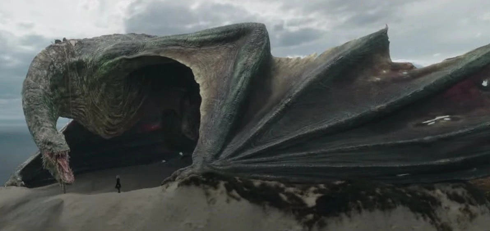
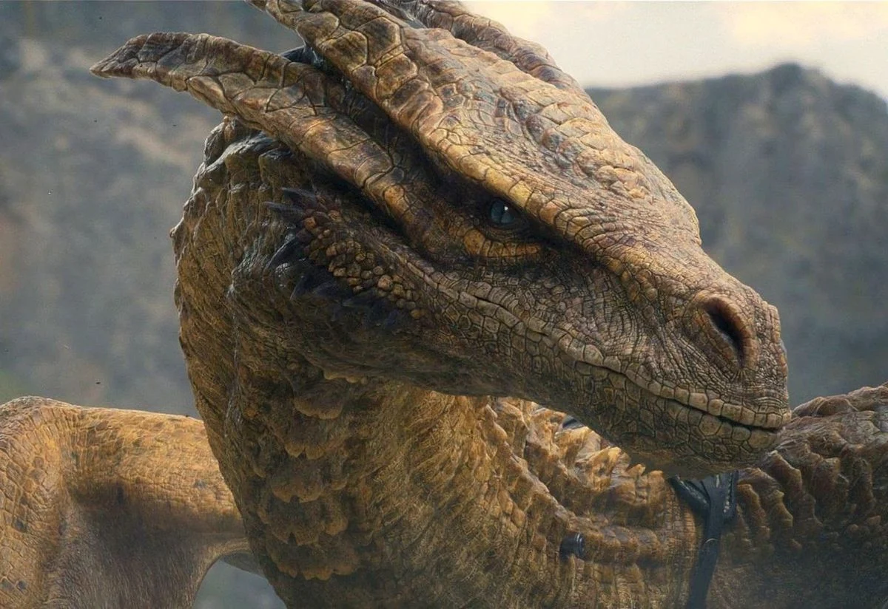
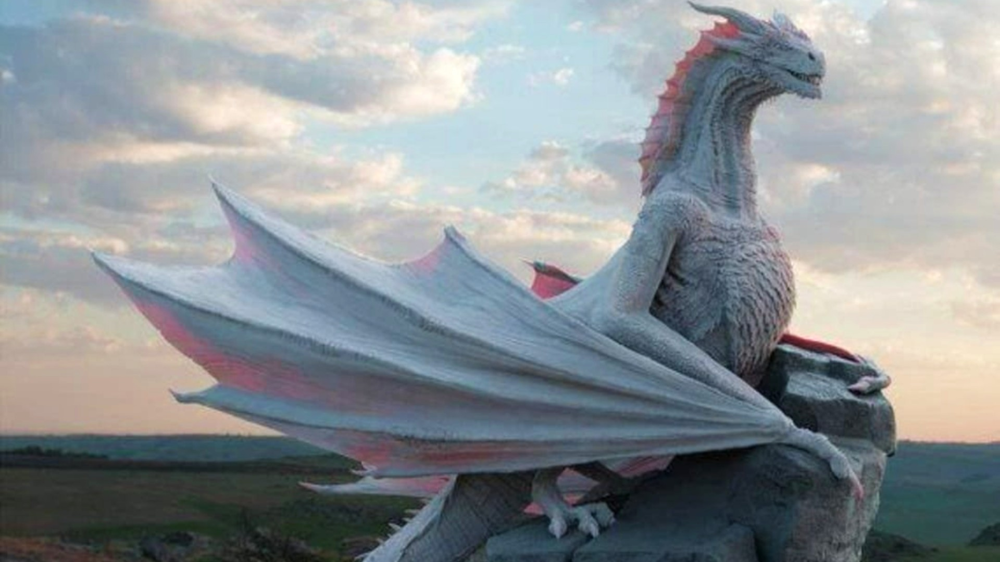

Dragons

Vhagar was a she-dragon of House Targaryen. She was ridden by Queen Visenya Targaryen during Aegon's Conquest.

Caraxes, called the Blood Wyrm, was a dragon ridden at first by Prince Aemon Targaryen and later by Prince Daemon Targaryen.

Syrax was a she-dragon. She was ridden solely by Rhaenyra Targaryen. Her name came from a goddess of Valyria.

Seasmoke was a dragon ridden at first by Ser Laenor Velaryon and later by the dragonseed, Addam of Hull.